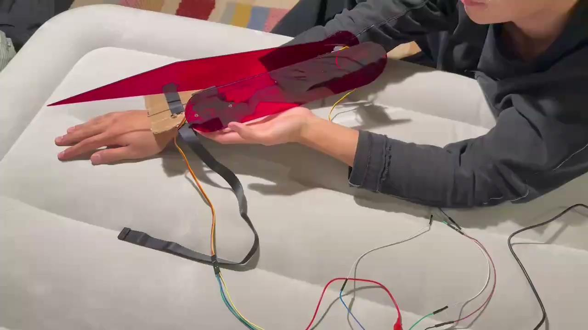
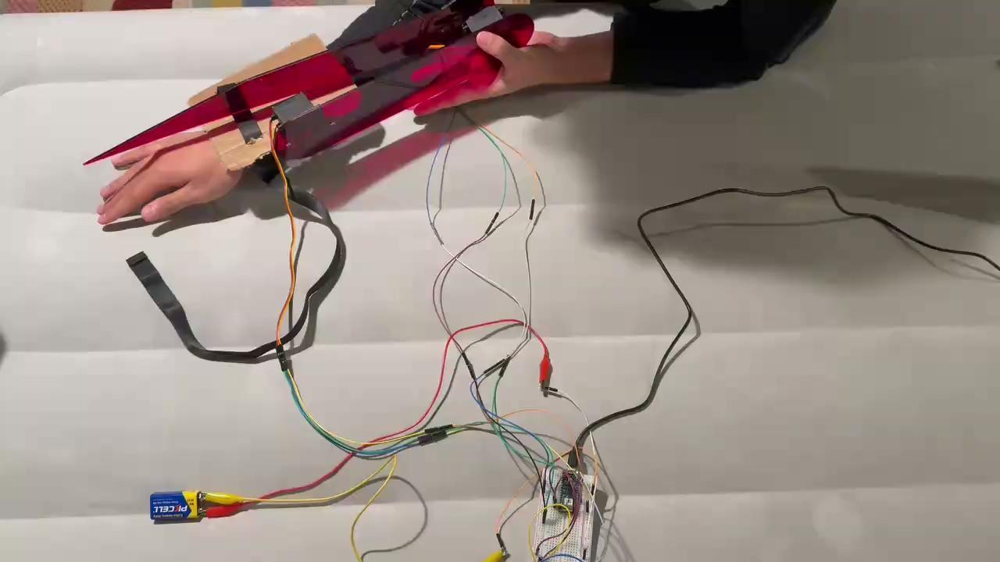

Mantis Blade
Fall 2024 · Wearable prototype

Mantis Blade is a wearable mechanical prototype inspired by Cyberpunk 2077. Pressing a button moves the arm-mounted mechanism, which returns to rest when released. The work brings a fictional extension of the body into a physical object that can be worn and controlled.
